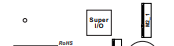

Primeiro Passo: Reúna as Ferramentas e Componentes Necessários
Certifique-se de que você tem todas as ferramentas necessárias, como chaves de fenda, pulseira antiestática, e todos os componentes do PC, incluindo processador, placa-mãe, memória RAM, placa de vídeo, disco rígido ou SSD, fonte de alimentação, gabinete, etc.
Segundo Passo: Instale a CPU na Placa-Mãe
Siga as instruções do fabricante da placa-mãe para instalar a CPU no soquete correspondente.

Terceiro Passo: Escolha a sua memória RAM.
Insira os módulos da memória RAM nos slots correspondentes. Elas são encaixadas nos slots 2 e 4, neste caso.

Quarto Passo: Conecte a Placa-Mãe à Fonte de Alimentação
Conecte a placa-mãe à fonte de alimentação, garantindo que todos os cabos estejam conectados corretamente.

Quinto Passo: Conecte os Dispositivos de Armazenamento
Instale o disco rígido ou SSD na bandeja de montagem da caixa e conecte-o à placa-mãe usando os cabos apropriados.
Sexto Passo: Encaixe a Placa de Vídeo na Placa-Mãe
Se você tiver uma placa de vídeo dedicada, encaixe-a na placa-mãe no slot apropriado e conecte-a à fonte de alimentação, se necessário.


Sétimo Passo: Instale a Placa-Mãe no Gabinete
Coloque a placa-mãe na caixa e fixe-a com parafusos. Certifique-se de que todos os componentes estejam alinhados corretamente com os painéis de entrada/saída do gabinete.

Oitavo Passo: Conecte os Cabos
Conecte todos os cabos da placa-mãe, incluindo os cabos da fonte de alimentação, cabos SATA para dispositivos de armazenamento e cabos frontais do gabinete (botões de energia, LED, etc.).